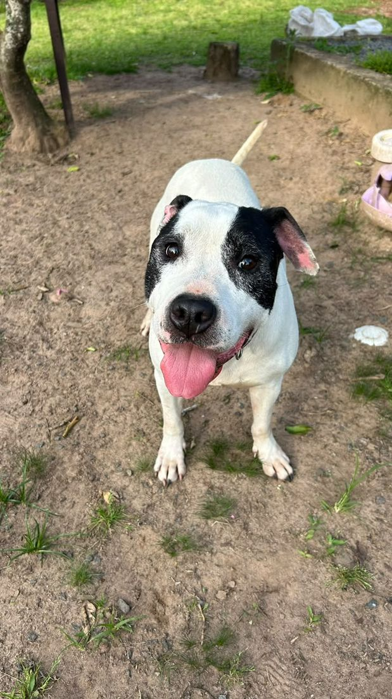
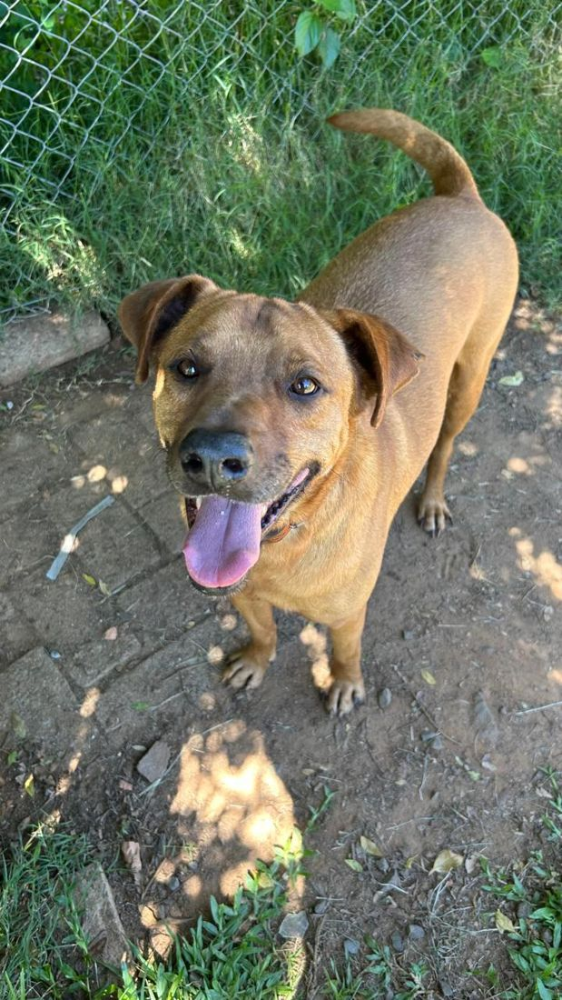
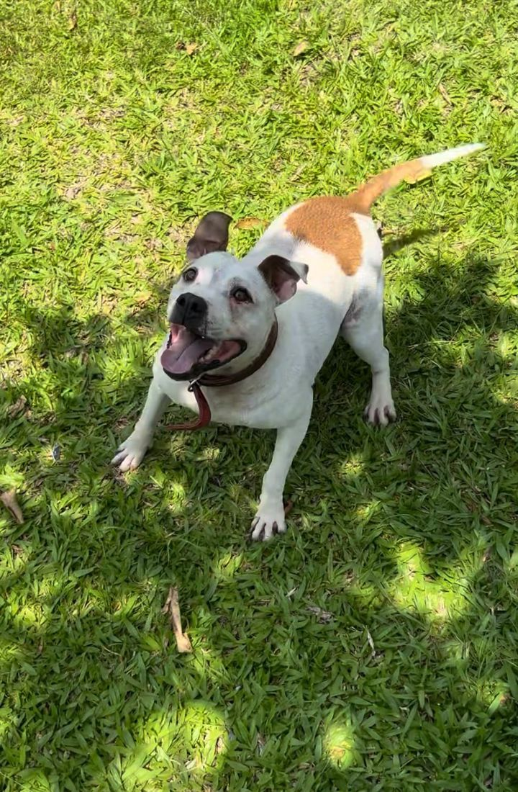
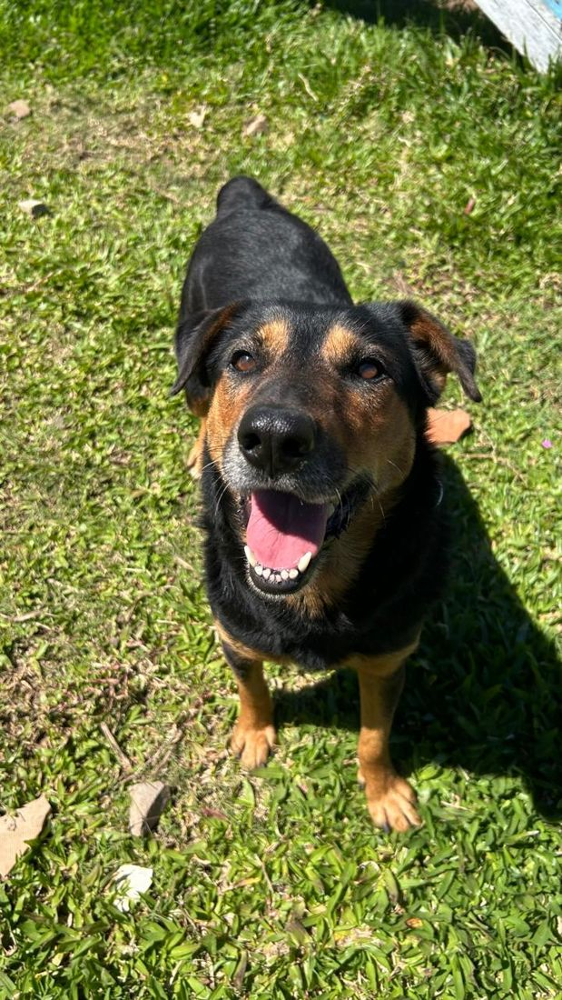
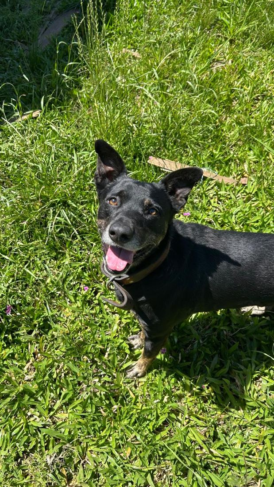
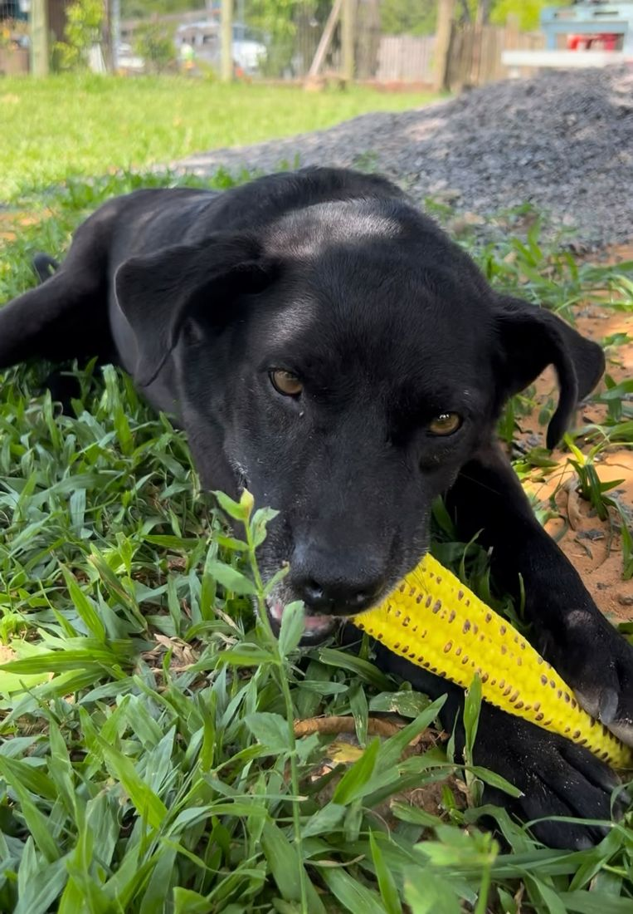
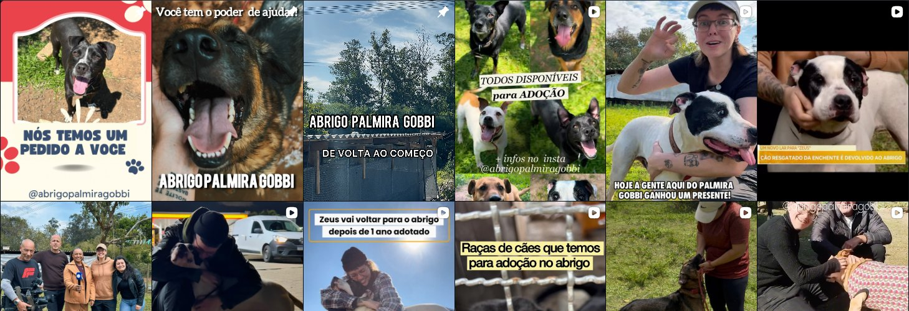

Doe pelo PIX
Qualquer valor vira ração, remédio e cuidado com o veterinário.
associacaopalmiragobbi@gmail.comA Associação Palmira Gobbi Amigos dos Animais é um time de voluntários de Canoas (RS) que cuida dos cães resgatados da enchente no Rio Grande do Sul. Seis deles ainda esperam por uma família.
Cada um tem seu jeito. Clique na foto para ver mais imagens e saber como adotar.

Branco com manchas pretas e um olhar que não perde nada.


Caramelo de orelhas dobradas que recebe todo mundo sorrindo.

Branca com manchas caramelo e a língua sempre de fora.


Preta e caramelo, de pelo macio e olhar doce.

Pretinho de orelhas em pé e patas caramelo.


Pretinho de olhos cor de mel que não larga um brinquedo.
Em maio de 2024, a enchente deixou centenas de cães sem casa em Canoas. Galpões viraram abrigo da noite para o dia, e voluntários passaram a cuidar deles em turnos.
Os galpões esvaziaram aos poucos. Os que ainda esperam seguem com a gente, todos os dias.
Ler a nossa históriaAdotando, doando pelo PIX ou só puxando conversa com a gente.
Qualquer valor vira ração, remédio e cuidado com o veterinário.
associacaopalmiragobbi@gmail.comVeja como funciona a adoção responsável, do primeiro contato até o cão chegar em casa.
Ver o passo a passoDúvidas sobre os cães, adoção ou doações? A equipe responde pelo WhatsApp.
Chamar no WhatsApp@abrigopalmiragobbi
Novidades dos cães, adoções que deram certo e os pedidos de ajuda da semana.
